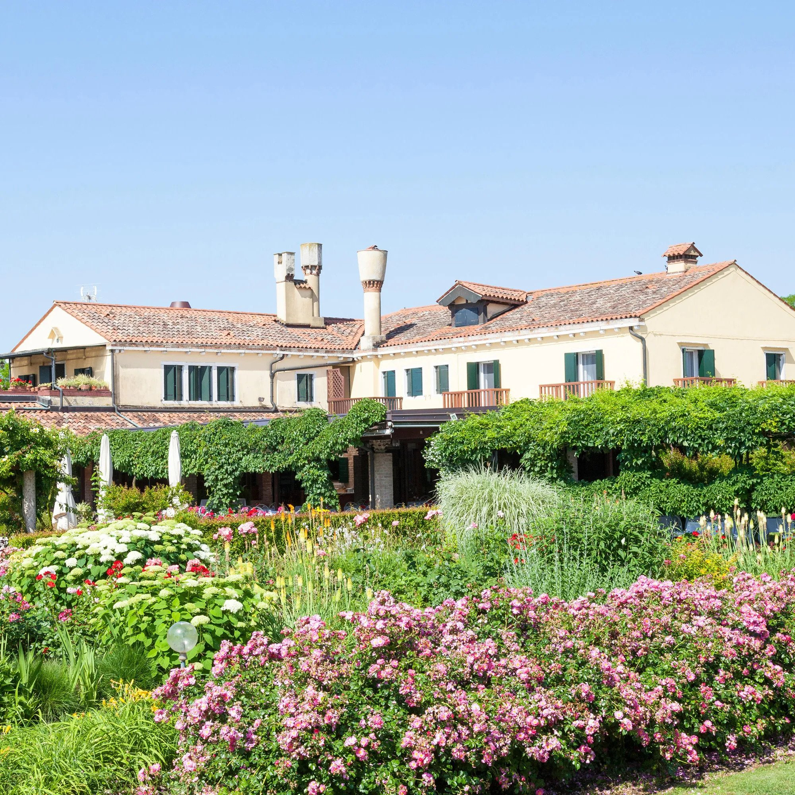
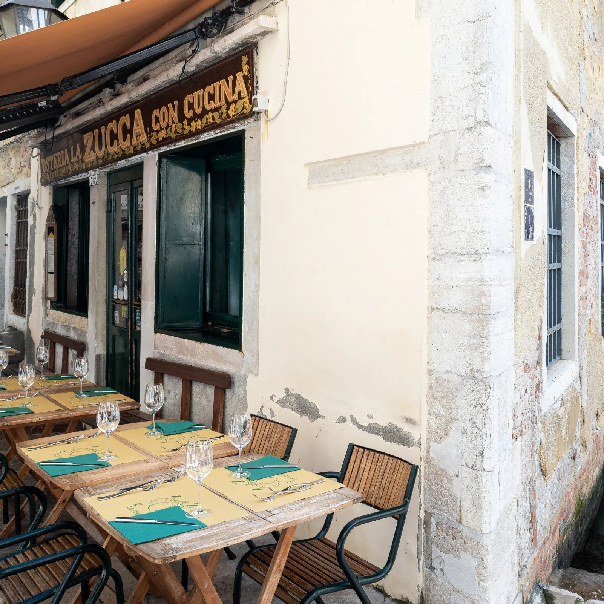
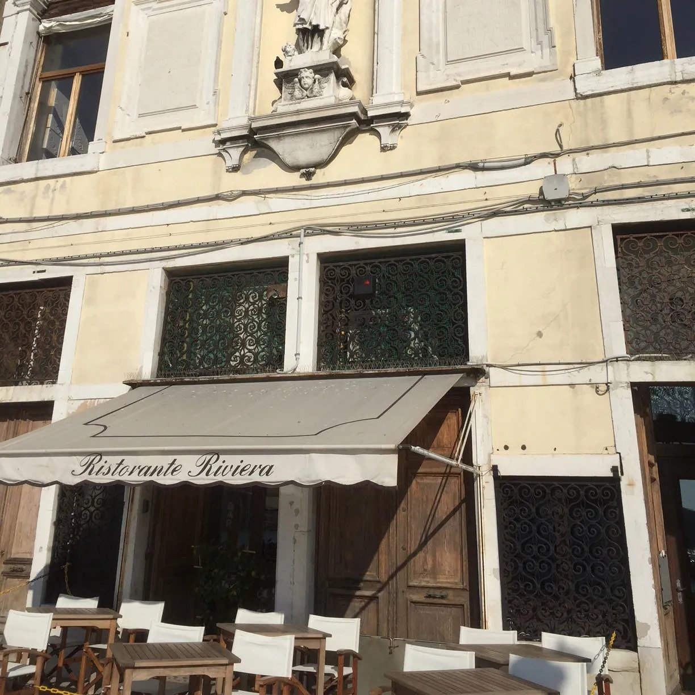

| Locanda Cipriani | ||
|---|---|---|
|  | The Locanda Cipriani provides a pretty slice of Merchant Ivory-tinted Venice: a shady old-fashioned garden on the beautiful little lagoon island of Torcello, with old-fashioned service and old-fashioned food that verges on the hotel variety. That said, you’re here for the setting and the Grand Tour ambience. From Ernest Hemingway and generations of British royals, to mid-20th-century A-list actors and presidents: Many big names have passed through the Cipriani’s country-inn-style doors. | Price: $$$ |
| La Zucca | ||
|  | Vegetarians flock to La Zucca, a much-beloved, something-for-everyone sort of local favorite, to escape Venice’s fish overload, but the restaurant does more than that. The food is simple: just good honest cooking and a daily-changing menu—a tell-tale sign that everything served was bought that morning. The savory pumpkin flan is legendary, the pasta dishes (try the tagliatelle with artichokes and pecorino if it’s available) are excellent, and all the desserts are memorable. | Price: $$ |
| Riviera | ||
|  | Riviera calls itself a "ristorante per onnivori"—restaurant for omnivores—and makes it bluntly clear that they’ll do nothing special for vegetarians or vegans. The rest of us couldn’t ask for a more special gastronomic experience, delicately prepared and beautifully presented. Raw seafood antipasti (literally) melt in your mouth; the squid risotto is exceptional; and the squab with cocoa and hazelnuts is extraordinary. There are tasting menus with fish, meat, or a mix of both. | Price: $$ |